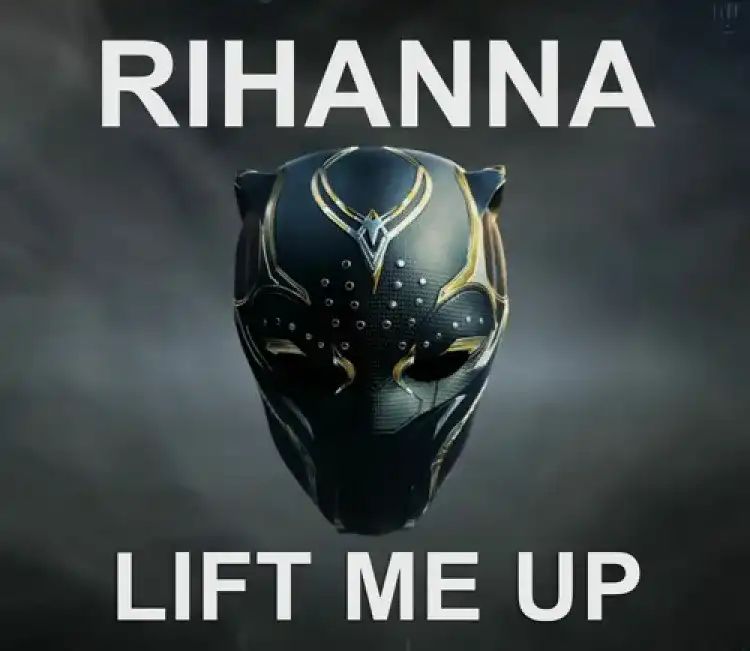
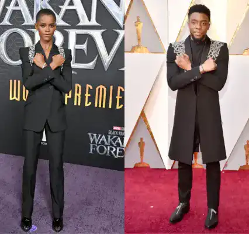

<!DOCTYPE html>
<html lang="FR"x-data="{menuIsOpen: false}" :class="{noscroll:menuIsOpen}"></html>
<head>
    <meta charset="UTF-8">
    <meta http-equiv="X-UA-Compatible" content="IE=edge">
    <meta name="viewport" content="width=device-width, initial-scale=1.0">
    <link rel="stylesheet" href="../src/css/style.css">
    <script defer src="https://unpkg.com/alpinejs"></script>
    <link rel="alternate" hreflang="en" href="http://architect.claudesamba.fr
    " />
<link rel="alternate" hreflang="es" href="http://architect.claudesamba.fr
" />
<link rel="alternate" hreflang="de" href="http://architect.claudesamba.fr
" />
    
    <title>Film</title>
   
    <link rel="icon" href="../public/icones/logo.svg" />
</head>

<body>
    <header class="header">
       
        <div class="header__logo-lang">
        <a href="../en/index.html" onclick="document.cookie = 
        `nf_lang=en; path=/ ; SameSite=Strict`
        ">
          
        </a>
        </div>
        <div class="header__logo">
             <a class="header__link-logo" href="/fr/index.html">KULTURE</a>
        </div>


        <button  class="header__menubtn menubtn" aria-controls="mainNav" @click="menuIsOpen = !menuIsOpen" :class="menuIsOpen &&'menubtn--open'" >
            <span class="menubtn__bar"></span>
        </button>

          <nav  id="mainNav" class="header__menu menu"  x-show="menuIsOpen" x-transition.duration.800ms >
             
                <a  class="page-title" href="../fr/index.html">
                    KULTURE
                </a>
            

            <ul class="menu__list">

                <li class="menu__item">
                    <a  class="menu__link "href="film.html">
                        Black Panther
                    </a>
                </li>


                <li class= "menu__item">
            <a class="menu__link "href="realisater.html">
                Ryan Coogler
            </a>
        </li>


        <li class= "menu__item">
            <a class="menu__link "href="musique.html">
              Lift Me Up 
                 
            </a>
        </li>


        <li class= "menu__item">
            <a class="menu__link " href="livre.html">
        A nation under our feet 
        </a>
    </li>


        <li class= "menu__item">
            <a class="menu__link " href="contact.html">
            Contact
        </a>
    </li>

      
    </header>


    <main>
    <h1 class="titre_article"> 
      Quand la musique devient un héritage - Lift Me Up  </h1>
<p class="date_publication"> Par Claude MALANDA 
    </p> 
    
    <p class="date_publication"> Publier le 24 / 10 / 2024 , mis à jour aujourd’hui à 9h45
    </p>
   
    <div>
    <p class="chapo"> La musique a le pouvoir de toucher nos cœurs de manière profonde et lift me up en est le parfait exemple. Extraite de la bande originale du film Black Panther II, elle a été interprétée par Rihanna dans laquelle elle rend hommage à Chadwick Boseman.</p>
    </div>
    

 <p class="site-info__description">Le morceau a été spécialement écrit pour la suite de Black Panther, élaboré à plusieurs sous les ordres du producteur suédois Ludwig Grason , écrit par l’artiste nigérian Tens. Lors d’une interview, Tems explique ce qu’il se cache derrière cette chanson </p>
 
 <div class="section_clair">

    <div class="image-container">
 
</div>

 <p> Lift Me Up" est devenue un hommage émouvant à Chadwick Boseman qui a incarné le personnage de Black Panther dans le premier film mort en 2020 d’un cancer. Il  a été un acteur dont le travail a contribué à briser des barrières et à inspirer nombreux d’entre nous, particulièrement des communautés sous-représentées. La chanson a permis de rappeler le talent de l’acteur , son influence et son impact positif sur de nombreuses vies, tout en célébrant son héritage cinématographique
</p>


</div>

<div class="image-container">

</div>

<p class="site-info__description"> Cette chanson montre que les super-héros ne portent pas que des capes, mais peuvent incarner des valeurs telles que la compassion et le respect des traditions. 
</p>

 <p class="site-info__description">Les paroles reflètent le besoin d’être soutenu et de trouver la lumière dans les moments sombres de la vie. Elle exprime également le désir profond d’amour et de réconfort.
</p>


  <div class="section_clair">

    <div class="image-container">
    
   </div>

    <p> L’interprétation de Rihanna est en parfait accord, sa voix exprime et transmet la gamme complète d’émotion dans les paroles, d’où cette chanson touche de nombreux cœurs et d’âmes à travers le monde.
</p> 

<p>La chanson évoque aussi le fait de se connecter avec ceux que nous avons perdus ; exprimer à quel point il nous manque et de trouver du réconfort dans leur souvenir.
   </p> 

  <p>En outre, la chanson a été incluse dans la bande originale du film "Black Panther: Wakanda Forever," renforçant ainsi son lien avec l'univers du Wakanda et le personnage de Chadwick Boseman. Cette inclusion dans la bande originale contribue à l'émotion et à la profondeur de l'histoire, faisant de "Lift Me Up" un héritage musical et cinématographique précieux.</p>
   
    <p> 
      Cet article pourrait vous intéresser : Rihanna est nommée aux Oscars pour la toute première fois grâce à son titre Lift Me Up
   </p>
   
    

  </div>

<h2>Écouter Lift me up </h2>

<audio controls>
    <source src="/sites/videos/Rihanna.mp3" type="audio/mp3">
   
</audio>

</main>
<footer class="footer">

    <div class="menu--separation">
      <span class="menu__barresep"></span>
  </div>

    <div class="footer-colum">
        

        <div class="menu__container">
            <p class="footer__texte">Claude MALANDA</p>
            <a class="footer__mail" href="mailto:claude.malamda_samba@edu.univ-fcomte.fr">claude.malamda_samba@edu.univ-fcomte.fr</a>

            <div class="reseau">
                <a href="#">
                    
                </a>
                <a href="#">
                    
                </a>
                <a href="#">
                    
                </a>
            </div>
        </div>
   

    
        <div class="footer_p">

          
            <p><a class="footer__lien-title" href="../fr/apropos.html">À propos</a>
            </p>
            
           <p><a class="footer__lien-title"  href="../fr/apropos.html">Glossaire</a></li>
           </p> 
            <p><a class="footer__lien-title"   href="../fr/autres.html">Autres projets</a>
           </p>

        
           
        </div>
</div>
        <p class="footer__p">
            Projet réalisé dans le cadre d'un exercice pédagogique au
            <a class="footer__link" href="http://mmimontbeliard.com/contact">
                département MMI de Montbéliard
            </a>
        </p>
    
</footer>

</body>
</html>